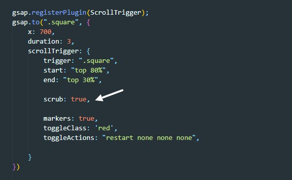

Scrub
scrub - это свойство которое привязывает нашу анимацию к скролу. т.е. скролим вниз анимация проигрывается вперед, проскролили назад анимация проигралась в обратном направлении
Вот как выглядит это свойство

Возможные значения
- true - анимация будет привязана к скролу с соблюдением timeline/ т.е. если мы проскролим обратно то анимация будет скролится в обратном направлении
- 4 - число - анимация будет проигрываться то количество секунд какое мы указали. По сути это transition анимации. т.е. перемещение будет с задержкой